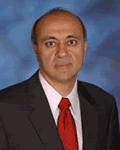
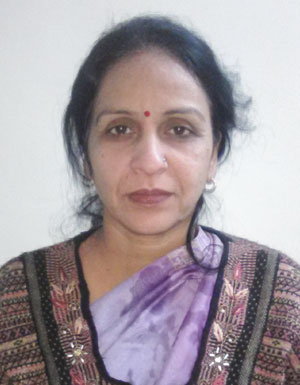
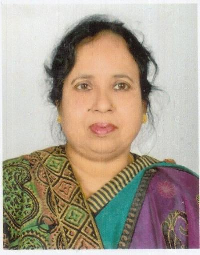
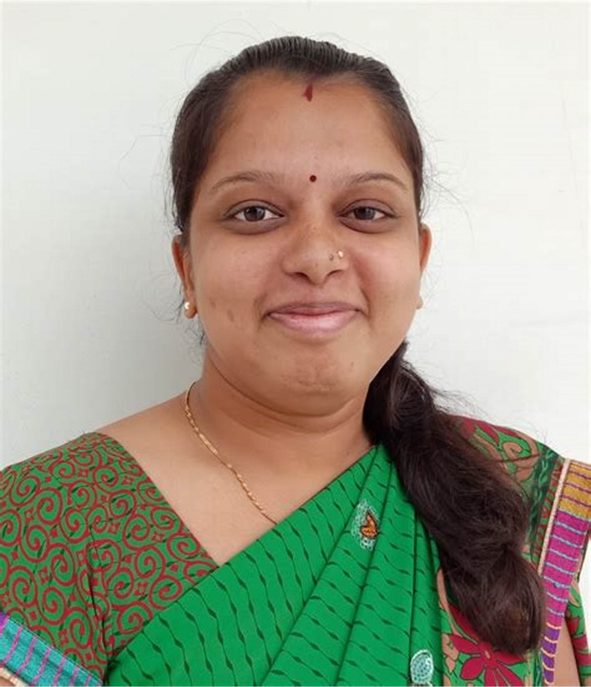
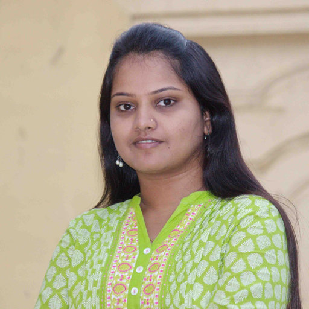

About The Department :
|  | Name Qualification Designation Specialization Contact Number Bio-data |
: : : : : : : |
Prof. D. Srinivas Kumar M.A. (Psychology), M.Ed. M.Phil. Ph.D.(Edn.,) Professor Educational Psychology; Cognitive Psychology dsrinivaskumar@rediffmail.com +91-8186020325 Click here to Download |
|  | Name Qualification Designation Specialization Contact Number Bio-data |
: : : : : : : |
Dr.R. Yasoda M.Sc. M.Ed. Ph.D. P.G. Diploma in Yoga Science Associate Professor & Maths Education & Research Methodology rapuruyasaoda@gmail.com +91-87909 17414 Click here to Download |
|  | Name Qualification Designation Specialization Contact Number Bio-data |
: : : : : : : |
Dr. S. Vijaya Vardhini M.A. M.Sc.,(Psy)M.Ed. Ph.D. Associate Professor & Head Methods of Teaching Social Studies, and Special Education. vijayavardhinis@gmail.com +91-94416 44461 Click here to Download |
|  | Name Qualification Designation Specialization Contact Number Bio-data |
: : : : : : : |
Dr. V. Mercy Jyothi M.Sc. M.Ed. UGC-NET Asst. Professor Methods of Teaching Bio-Science, Environment Edn. mercyjyothiv@gmail.com 91-94907 16903 Click here to Download |
|  | Name Qualification Designation Specialization Contact Number Bio-data |
: : : : : : : |
Dr. V. Saraswathi M.A. M.Ed. Ph.D. Asst. Professor Methods of Teaching Telugu vs9951694120@gmail.com +91-99516 94120 Click here to Download |
| Name of the course | Intake | |||
|
50 50 |
|
Name of the Faculty |
Title of the Project |
Funding Agency |
Amount Sanctioned |
Completed/ In progress |
|
Dr. R.Yasoda |
Investigation into problems relating to teaching-learning mathematics at primary level” (Minor Research Project) |
M.H.R.D., New Delhi, 2001-02 |
Rs.13,500/- |
Completed |
|
Awareness, Attitude and Competencies of Teachers to deal Children with Dyscalculia at Primary Level in A.P. |
UGC, New Delhi, 2010-12 |
Rs.4,46,200/- |
Completed |